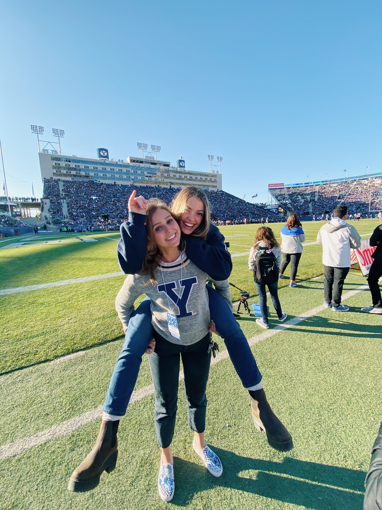
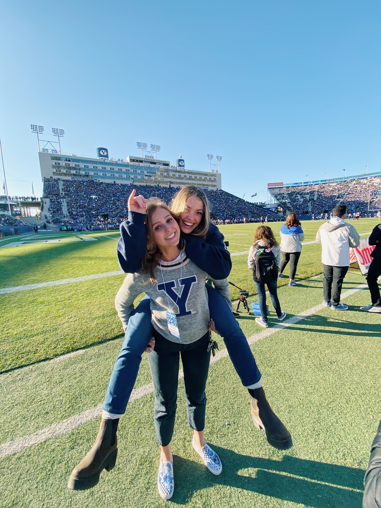

The Crawford Family

Lives in Orem, Utah and comes from a family of ten: the oldest of four boys and four girls.
Lives in Orem, Utah and comes from a family of ten: the oldest of four boys and four girls.
 

Currently studying Finance at Brigham Young University with a minor in Computer Science and Microbiology. Loves attending sporting events and being involved around the campus, Go Cougars!
Had a life goal of riding a horse that was recently accomplished. Simultaneously, a fear of horses was discovered.
Not afraid of dogs. Loves dogs.
Who doesn't love going to new places and seeing new things? Has a passion for exploring and creating memories.